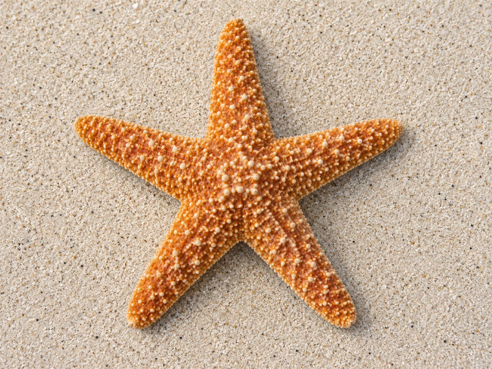

حزمةُ طباعةٍ واحدةٌ لليوم الثاني عشر · ٤ أقسام (قسمٌ لكلِّ ركن). اضغطي Ctrl/⌘ + P ثم اختاري A4. تُقصّ البطاقاتُ وتُلوَّن الرسومُ الجاهزة. أعمار ٥–٦: بلا كتابةٍ ولا رسمٍ حرّ.
🔎 ركن أكتشف ما حوليكنوزُ البحر — سبحان مَن خلقه
وحدة أنا مخلوق · اليوم الثاني عشر — بطاقاتُ كنوزٍ بحرية للملاحظة بالمكبّر والمطابقة

طريقة العمل: يلاحظ الطفل كنوزَ البحر بالمكبّر (صدفةٌ · لؤلؤةٌ · حصاةٌ بحرية · رمل)، ثم يطابقُ كلَّ كنزٍ ببطاقته. وعند كلِّ عجيبةٍ يردّد: «سبحان مَن خلقه».
بطاقاتُ كنوزِ البحر — تُقصّ وتُطابَق بالعيّنة الحقيقية
 صورة: صدفة
صورة: صدفةصدفة
سبحان مَن خلقها
 صورة: حصاة
صورة: حصاةحصاة بحرية
سبحان مَن خلقها
وكنوزٌ أخرى

صورة: نجم البحرنجمُ البحر
سبحان مَن خلقه
 صورة: مكبّر
صورة: مكبّرمكبّري
أُلاحظُ وأتفكّر
🎨 ركن فنوني الجميلةألوّنُ مشهدَ البحر
وحدة أنا مخلوق · اليوم الثاني عشر — مشهدُ بحرٍ جاهزٌ للتلوين + قصاصاتٌ تُقصّ وتُلصق
طريقة العمل: يلوّن الطفل مشهدَ البحرِ الجاهز (أمواجٌ وشمسٌ وصدفٌ وسمكةٌ بلا ملامح)، ثم يقصّ قصاصاتِ البحر ويلصقها حوله، ويردّد «اللهُ خلق البحرَ وأبدع صنعه».
١) مشهدُ البحر — ألوّنه
٢) قصاصاتُ البحر — تُلوَّن وتُقصّ وتُلصق حول المشهد
صورة: صدفة صدفة
صورة: نجم البحر
نجمُ البحر
🧱 ساحة البناءأبني سفينةً تجري في البحر
وحدة أنا مخلوق · اليوم الثاني عشر — بطاقاتٌ جاهزة تُوضع على البناء (لا تلوين)
طريقة العمل: يبني الطفل بالمكعبات سفينةً ومرفأً على قاعدةٍ زرقاء (البحر)، ثم يضع البطاقةَ الجاهزة على بنائه ويردّد معناها؛ وتذكّره المعلمةُ أنّ اللهَ سخّر البحرَ لتجري فيه السفن. (لا تلوين هنا — التلوينُ في ركن فنوني.)
بطاقاتٌ تُوضع على البناء
 صورة: منارة
صورة: منارةمنارةٌ تهدي السفن
وأتذكّرُ خالقي
 صورة: أبني شكرًا
صورة: أبني شكرًاوأنا أبني شكرًا
 صورة: أحبّ خالقي
صورة: أحبّ خالقيأُحبُّ خالقي
🧩 ركن أدرك وأستمتعمخلوقاتُ البحر ومنافعها
وحدة أنا مخلوق · اليوم الثاني عشر — بطاقاتُ مطابقةٍ تُقصّ (مخلوقٌ ↔ منفعته)
طريقة العمل: تُقصّ البطاقاتُ، ويطابقُ الطفل كلَّ مخلوقٍ بحريٍّ بمنفعته التي جعلها الله فيه. حوارٌ بالصورة بلا كتابة: «مَن جعل في الصدفةِ لؤلؤًا؟».
مخلوقٌ ↔ منفعته
نأكلُ من خيره
صورة: صدفة الصدفة
نأخذُ منها اللؤلؤ
تحملُنا في البحر
رزقٌ وماءٌ سخّره الله
المعنى المركزي المتكامل لليوم الثاني عشر: خلق اللهُ البحارَ وسخّرها؛ فيها السمكُ والرزقُ واللؤلؤ، وتجري فيها السفنُ بأمره؛ فأتفكّرُ في عظيم خلقه وأشكرُ مسخّره.